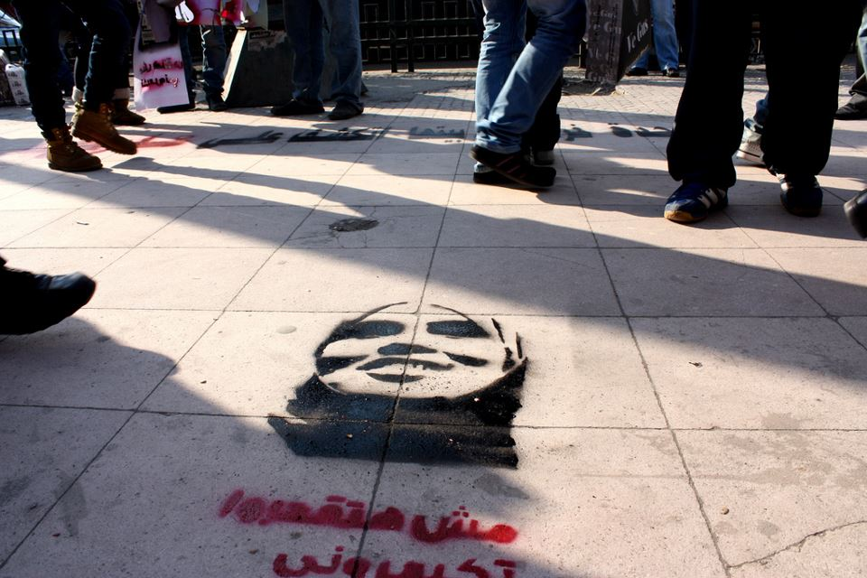
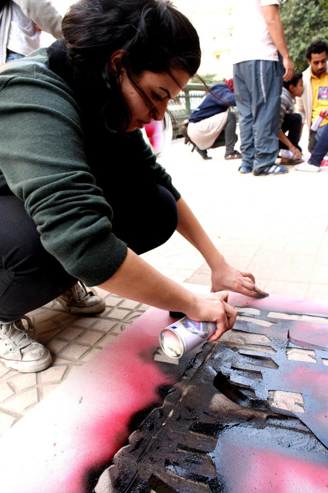
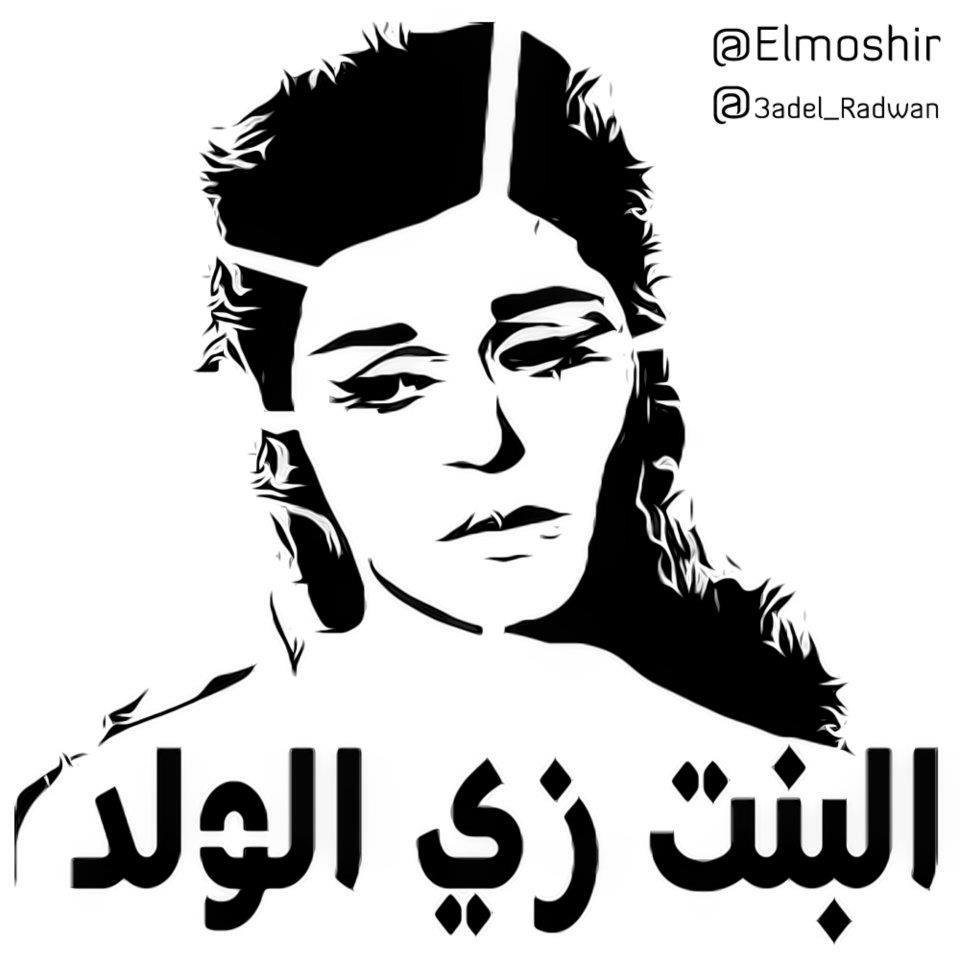
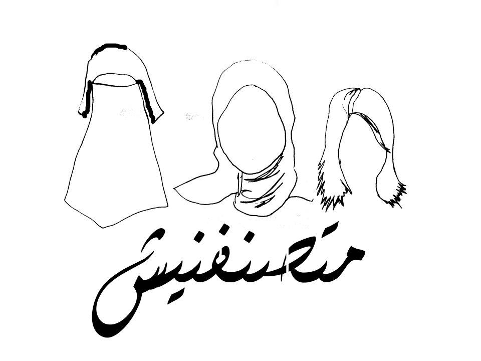
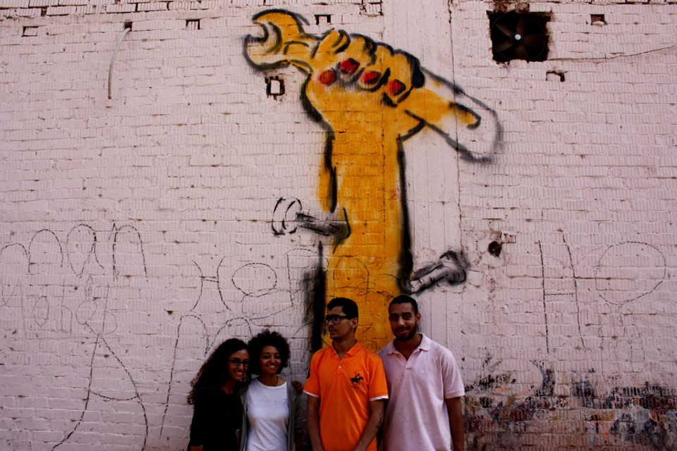
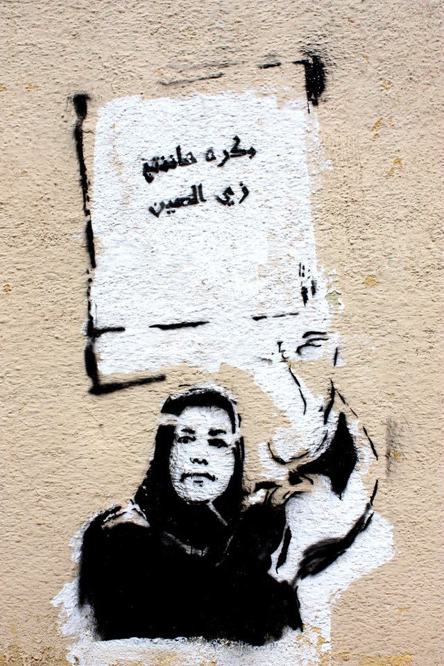
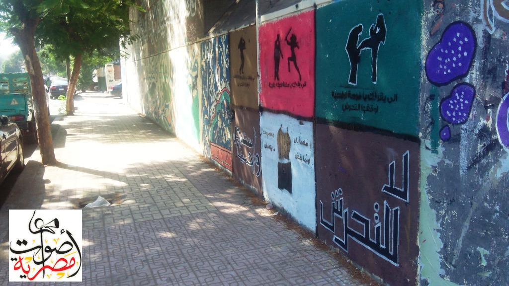
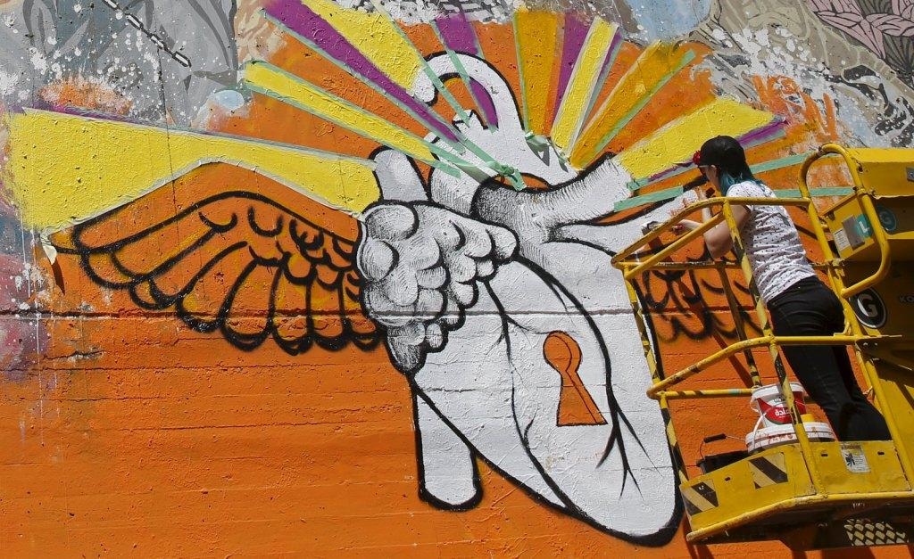
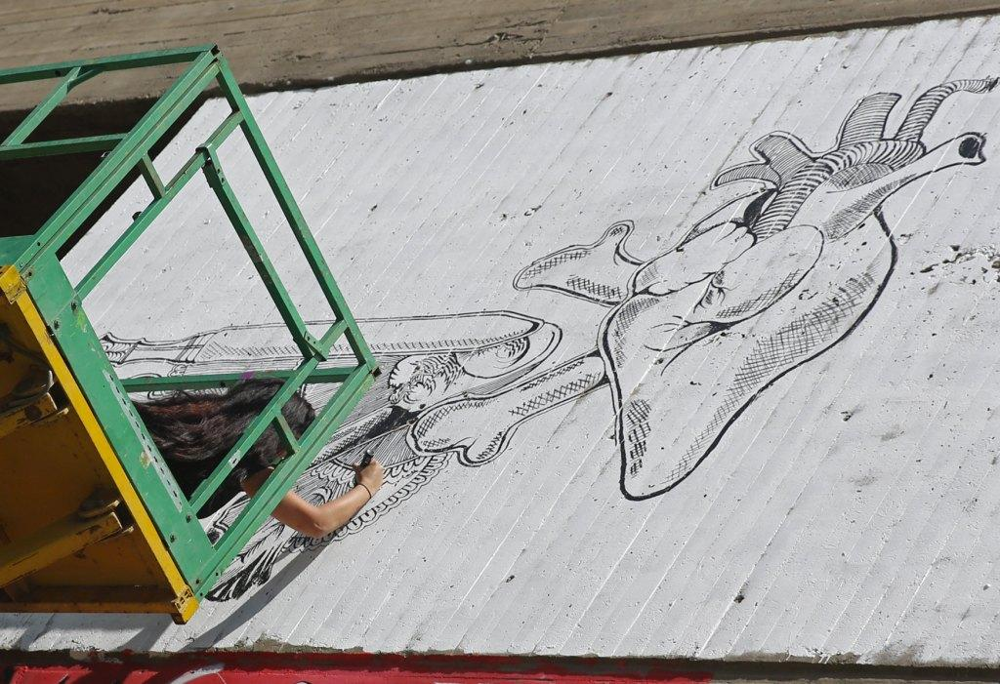
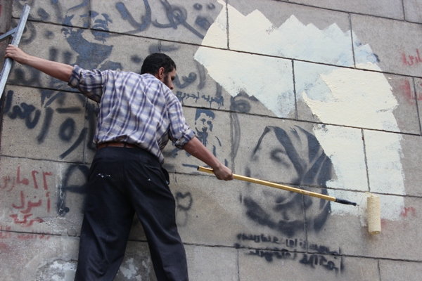

أحدث الأخبار
- القضاء الإداري يقضي بحل اتحاد الكرة وبطلان الانتخابات الأخيرة
- مقتل 3 أشخاص وإصابة 3 آخرين في حادث مروري بالبحيرة
- وزير الخارجية يجري اتصالاً مع رئيس المجلس الرئاسي الليبي
- عاصمة مصر تتجه لزيادة سكانية نصف مليون العام الجاري
- باولو يقود هجوم الزمالك أمام رينجرز في دوري الأبطال
- المالية تعفي المطاعم غير السياحية من ضريبة القيمة المضافة بشروط
- "القضاء الإداري" يلزم الجامعة الأمريكية بتحصيل مصروفاتها بالجنيه المصري
- البورصة ترتفع بنسبة 0.52% في نهاية التعاملات
الجرافيتي النسائي.. صرخة المرأة في الثورة رهينة قانون التظاهر
"ست الحيط" مشروع فني يسعى لتمكين المرأة من خلال فن الجرافيتي بالقاهرة، 7 أبريل 2014. رويترز
كتبت: رحمة ضياء
من رحم ثورة 25 يناير 2011 ولدت رسومات جرافيتي على جدران الشوارع كان للمرأة نصيب منها وعبرت عن دورها كشريك في الثورة والمجتمع، وجسدت ثورتها ضد ما يمارس ضدها من تمييز وعنف.
جرافيتي حريمي
كانت البداية بحملة "جرافيتي حريمي" التي أطلقتها مبادرة "نون النسوة" يوم 9 مارس 2012 في الذكرى الأولى لما عرف إعلاميا بواقعة "كشوف العذرية".
وتقول سالي ذهني، عضو مبادرة نون النسوة، لأصوات مصرية، إن المبادرة فكرت في عمل جرافيتي يشمل رسومات وكتابات لدعم سميرة إبراهيم "ضحية كشوف العذرية" في قضيتها، وبالفعل تم تنفيذها في محيط دار القضاء العالي خلال وقفة احتجاجية داعمة لها.

جسد الجرافيتي وجه سميرة إبراهيم مع عبارة "متسكتيش" و"مش هتقدروا تكسروني".

وخاضت سميرة إبراهيم، التي قالت إنها تعرضت ومجموعة من الفتيات لفحص عذرية خلال احتجازهن بالسجن الحربي في مارس 2011، معركة ضد قيادات في المجلس العسكري، وساندها ائتلاف من منظمات حقوق الإنسان، في إقامة دعوى قضائية في يوليو 2011، للمطالبة بوقف إجراء فحوص كشف العذرية.
وأضافت سالي ذهني أن المبادرة فكرت في "جرافيتي حريمي" من منطلق تساؤل "ليه مش بنشوف جرافيتي يعبر عن المرأة وقضاياها ومشاركتها في الثورة".
ووجهت المبادرة الدعوة لكل من يريد المساهمة بأفكار في الحملة.
الفنانات أبطال الجرافيتي
نتج عن هذه الدعوة مجموعة من رسوم الجرافيتي، استلهمت أفكارها من عبارات تحمل روح الثورة وردت على لسان فنانات في سياق أعمالهن الفنية.
من هذه الأعمال رسم للفنانة سعاد حسني مرفق بعبارة "البنت زي الولد"، وآخر لشادية مع عبارة "أنا اللي فتحت الهويس"، وثالث لفاتن حمامة "عاشت مصر حرة".

كما تضمنت الحملة رسماً لكل من سعاد حسني ونادية لطفي مرفقاً بعبارة "مفيش حاجة للرجال فقط"، وآخر للمطربة أم كلثوم مع عبارة "أعطني حريتي أطلق يديا".
انتشار الفكرة
وشكلت الحملة انطلاقة لجرافيتي يتحدث بلسان حال فتيات وسيدات مصر.
واستخدمت مبادرة نون النسوة صفحتها على موقع فيس بوك لنشر نماذج من الورق أو البلاستيك لحروف أو تصميمات تستخدم في تنفيذ الرسومات على الجدران.
وتقول عضو مبادرة نون النسوة، "كنا بننشر stencils (نماذج الرسومات) على صفحة المبادرة بموقع فيس بوك، وكتير من الأشخاص من خارج المبادرة استخدموها ونشروا الرسومات في أماكن مختلفة جوه القاهرة وفي المحافظات".
ومن الرسومات التي انتشرت إبان الحملة رسم لسيدة مع عبارة "مصر جابت ستات"، وآخر لثلاث فتيات واحدة ترتدي الحجاب والثانية ترتدي النقاب والثالثة غير محجبة، مرفقاً بعبارة "متصنفنيش".

وتوضح سالي ذهني أن الرسم يعبر عن رفض المرأة لتصنيفها في قوالب نمطية على حسب ما ترتديه.
وتضيف أن أهمية الجرافيتي النسائي أنه فكرة سهلة الوصول وجاذبة للانتباه، قائلة، "الناس في الشارع كانت بتسألنا بتعملوا إيه ودي كانت فرصة إننا نتكلم معاهم عن أهمية المساواة ورفض العنف ضد المرأة وغيرها من القضايا اللي عبر عنها الجرافيتي".
تجسيد نضال المرأة
في مايو 2012، أطلقت المبادرة حملة جرافيتي نسائي جديدة في مدينة المحلة بمناسبة عيد العمال، كان من بينها رسم ليد أنثوية تقبض على "مفتاح إنجليزي" وأظافرها مصبوغة بطلاء الأظافر.

كما تضمنت جرافيتي لسيدة ترفع لافتة "بكرة هننتج زي الصين".

وتوضح سالي ذهني أن الهدف من هذه الحملة كان التأكيد على أن المرأة شريكة في الحركة والنضال العمالي، "لنظهر للناس أن المرأة موجودة وفعالة مثلها مثل الرجل".
وتبرر توقف مشروع جرافيتي حريمي في 2013 ، قائلة، "الجرافيتي بقى تهمة بيحاسب عليها القانون، عشان كده مش سهل إن حد ينزل دلوقتي يرسم لأنه بيخاطر، وممكن يتسجن وتوجه له اتهامات بالتخريب والاعتداء على الممتلكات العامة".
ولهذه الأسباب توقف رسام الجرافيتي الذي يوقع على رسوماته باسم "المشير" عن الرسم منذ عامين كما يقول لأصوات مصرية.
ورفض "المشير" الذي نفذ رسومات حملة "جرافيتي حريمي" ذكر اسمه كما تحفظ على الحديث للإعلام، مكتفيا بالقول إنه كان يقوم بترجمة الأفكار التي تطرحها المبادرة إلى "stencils" تطبع على الجدران.
جرافيتي التحرش
ويعد التحرش من أبرز القضايا التي تبناها الجرافيتي النسائي، وأطلقت مبادرة "أوقفوا التحرش" حملة لمناهضة التحرش في ديسمبر 2012 اعتمدت فيها على رسم الجرافيتي، بشارع محمد محمود بوسط القاهرة.

تضمنت الرسومات مشاهد لفتيات يقاومن المتحرش بحركات دفاعية مرفقة بعدة عبارات من بينها "لو قالك يا بطل وريله العضل"، "لو قالك يا فرسة ارفسيه" إلى جانب شعارات "اوقفوا التحرش" و"لا للتحرش".
ست الحيطة
ويعد مشروع "ست الحيطة" من أبرز مشاريع الجرافيتي النسائية، وانطلق في إبريل 2013، بهدف تمكين المرأة، واشترك في تنفيذه مجموعة من الفنانين التشكيليين، نشروا رسوماتهم في محافظات مختلفة كالمنصورة والقاهرة والإسكندرية والأقصر.

لا تزال آثار بعض هذه الرسوم باقية على الجدران، لم تشملها جهود إزالة الجرافيتي من الشوارع، من بينها رسومات على جدران شارع محمد محمود لفتيات مع عبارات "احلمي" و"أنتي جميلة"، و"رفقا بالقوارير"، و"أنتي نص المجتمع".
جرافيتي ميادة أشرف
ومن أحدث رسومات الجرافيتي التي حملت طابعا نسائيا، جرافيتي الصحفية ميادة أشرف، المعروفة إعلاميا بلقب "شهيدة الصحافة"، والتي سقطت خلال اشتباكات بين أنصار جماعة الإخوان وقوات الأمن بمنطقة عين شمس في مارس 2014.
نفذت لجنة "الحسيني أبو ضيف للدفاع عن مهنة الصحافة"، الجرافيتي ولا يزال موجوداً على جدران نقابة الصحفيين مع بقية صور "شهداء الصحافة".
نقلة في العمل النسائي
وتقول هالة مصطفى، المنسق العام لمبادرة شفت تحرش، لأصوات مصرية، إن ظهور الجرافيتي النسائي كان نقلة هامة في العمل النسائي لقدرته على إيصال الفكرة بشكل فوري دون الحاجة لقراءة بيان طويل أو حضور حلقة نقاش.

وتقول إن سبب توقف المبادرات الخاصة بالرسوم النسائية هو أن "الجرافيتي بشكل عام أصبح مطارداً من النظام الذي لا يحتمله ويقوم بإزالته من على الجدران"، وتضيف، "نتعشم في عودة ظهوره مرة أخرى".
تجريم الجرافيتي
وأصبحت رسومات الجرافيتي حاليا رهينة بتفسير قانون التظاهر الجديد وما إذا كان يعتبرها ضررا بالممتلكات.
ويقول حافظ أبو سعدة، عضو المجلس القومي لحقوق الإنسان، لأصوات مصرية، إن قانون التظاهر الجديد فتح الباب لتجريم الرسم والكتابة على الجدران، باعتبارهما من أشكال الإضرار بالممتلكات العامة والخاصة.
وتصل العقوبة إلى الحبس مدة لا تقل عن سنتين ولا تجاوز خمس سنوات والغرامة لا تقل عن خسمين ألف جنيه ولا تجاوز مئة ألف جنيه أو إحدى هاتين العقوبتين بحسب نص المادة 19 من قانون التظاهر.

ويشير أبو سعدة إلى أن مشروع القانون القديم كان ينص صراحة على تجريم الجرافيتي في إحدى مواده لكنها حذفت في النص الحالي للقانون اكتفاء بالمادة 7.
وتنص المادة 7 من قانون التظاهر الذي صدر في عهد الرئيس السابق عدلي منصور، بتاريخ 24 نوفمبر 2013، على أنه يحظر على المشاركين في الاجتماعات العامة أو المواكب أو التظاهرات الاعتداء على الأرواح أو الممتلكات العامة أو الخاصة أو تعريضها للخطر.


تعليقات الفيسبوك